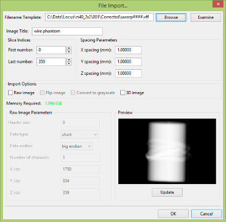
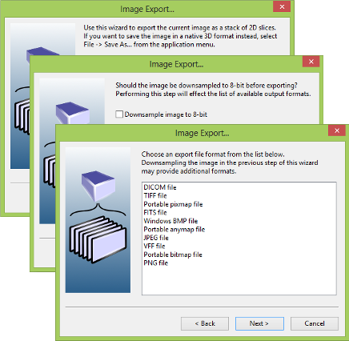

Reading and Writing Image Files
This section describes basic reading and writing methods in MicroView.
Overview
MicroView supports a number of 2D and 3D file formats, both for image data, as well as surface geometry formats. A distinction is made between reading/writing image data and importing/exporting image data. This distinction is reflected in the entries listed in MicroView's File menu. File reading and writing reads and writes precisely one file per operation (for instance, one might read a vff image, then save it to a different filename in a different format).
File import and export operations are used to read and write, respectively, a sequence of 2D images. Image import is useful for loading a sequence of 2D images into a stacked 3D image. Image export is useful for splitting a 3D image up into a sequence of 2D slices.
Not all image formats supported in MicroView are available for all tasks: For instance, while exporting a 3D VFF image to a sequence of TIFF images is available, saving a 3D VFF image to TIFF format is not, since there is no 3D TIFF image format defined.
MicroView supports images in various bit depths, ranging from 8-bit to 32-bit formats. Not all file formats are available for image writing and image exporting, depending on the limitations of the individual format. Often, it is convenient to downsample image data to 8-bit, in order to maximize the number of file formats available.
MicroView supports images with varying numbers of channels in them. Both single channel (e.g. grayscale images) as well as multichannel (e.g. RGBA images) are supported. Currently, multichannel images are exclusively interpreted as RGB images.
The complete list of supported file formats is available in Appendix A of this document.
Loading an Image
Select File → Open... from MicroView's menu. Enter a filename, or
locate a file in the file selector that appears on the screen.
Saving an Image
Select File → Save As... from MicroView's menu to save an image.
Select the desired output image type in the drop down selector at the
bottom of file selector dialog and enter a filename for the new image.
Saving a Screen Snapshot
Position the mouse over any 2D viewport, or the main 3D viewport, and press the t key to save a snapshot of the viewport to an image file. Select a filename and filetype, then hit OK to save the file.
Importing DICOM images
MicroView has good support for reading DICOM images from local DICOMDIR-formatted collections (such as those commonly created by imaging tools that export image data to CD-ROM), as well as from loose DICOM image collections. If DICOM data comes with a DICOMDIR index file, simply open this index file in MicroView with the File → Open menu, then use the data browser window to select one or more image series to load. For other DICOM collections, two options exist for loading data: 1) Images can be imported using MicroView's import tool, and 2) a DICOMDIR index file can be generated for your data collection. The latter method offers some flexibility because the generated DICOMDIR file allows you to browse image data quickly again at
a later date without having to reindex images.
Importing 2D image slices
Note
As of 2020-01-08 filename matching template behaviour has changed. Take care to read the following documentation carefully.

MicroView is capable of importing a sequence of 2D images, in a variety of common image formats, and assembling them into either a 3D image (with fixed z-slice spacing) or a stack of spatial or temporally related 2D slices. In order to accomplish this, each 2D image file must be named in a sequence that can be described with one or more wildcard characters. In earlier versions of MicroView, the collection of filenames needed to conform to fairly rigid rules: sequencing of filenames needed to be monotonic and could only increase by one digit per file. Newer releases relax this constraint significantly.
Select File → Image Import... from MicroView's menu. Enter a filename template, in the format import-*.png, where "*" denotes
a wildcard that matches one or more numeric characters . The Browse button to the right of the template filename box can be used to
select a file from a file browser. Hit the Examine button to permit MicroView to examine metadata for all images found in the selected
folder -- an import template will be automatically generated to match all the images in the selected folder for you. If possible, pixel or voxel spacing values will also be automatically updated. First and last number indices will be updated according to the number of files that match the current template.
If needed, adjust the First number and Last number in the appropriate entry boxes to constrain the set of files loaded (e.g. if a
subsection of existing files on disk is desired to be loaded). The first and last number are 0-based index numbers into the list of existing files.
Enter the spacing between image slices, in millimeters. Finally, press the OK button to import the sequence of images. Note also, hitting the Update button
will show a preview of a slice of image data using the current settings: this is most useful when loading raw image data as a check on dimensions and data format.
Example
If the template specified ends with import-*.png and files import-004.png, import-006.png and import-007.png are present in the specified folder, First number will automatically be set to 0, while Last number will be set to 2. The first and last index numbers control the list of filenames used based on files present on disk so selecting Firstand Last numbers as 1 and 2, here, would mean only import-006.png and import-007.png would be considered. First and Last numbers are indices into the list of existing files on disk rather than generators of a list of filenames directly.
Warning
Previous versions of MicroView operated in a slightly different fashion: Assuming a template ending with import-###.png and First and Last indices set to 0
and 2, MicroView would attempt to load files import-0000.png, import-0001.png and import-0002.png. That is, characters marked by '#' would be replaced by a
numeric value which starts at First, then monotonically increased until Last is reached. This pattern replacement has nothing to do with files that are actually
on disk and is more restrictive than the newer methodology.
Importing Raw Images
MicroView can also import raw data in a variety of forms. Start by clicking the Raw Image button to display additional image import options. Specify the offset from the beginning of each file to the raw image data (in case an image header is present), the data type, byte ordering (for 16-bit image data) and the dimensions of the raw image data.
Note
MicroView can also import a single 3D raw image, if the 3D Image checkbox is checked. Instead of entering a sequence of file names, specify the entire filename, and enter x, y and z axis dimensions.
Exporting 2D image slices

Select File → Image Export... from MicroView's menu. Choose an image
format from the list provided. The list will vary depending on the image
depth of the image you are saving. Next, select an output directory to
write the image slice sequence into. MicroView will automatically write
image slices to filenames with an extension that depends on the file
format that you select, and a prefix of "export-" (e.g.
export-0001.gif, ...).